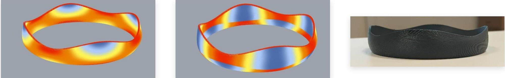

Variable-extrusion & carbon-fibre printing
Variable-extrusion carbon-fibre FDM paired with stress simulation, placing material where the structure actually needs it.
ThemeAdditive & Materials
Year2025
StatusActive
MethodsCarbon fibre, Variable extrusion, Stress-driven toolpaths

Uniform extrusion puts the same amount of material everywhere, including where it does nothing. Varying extrusion along the toolpath lets material follow the stress field instead.
The lab pairs variable-extrusion carbon-fibre FDM with stress simulation to test how far that idea can be pushed before print quality or structural performance gives way.